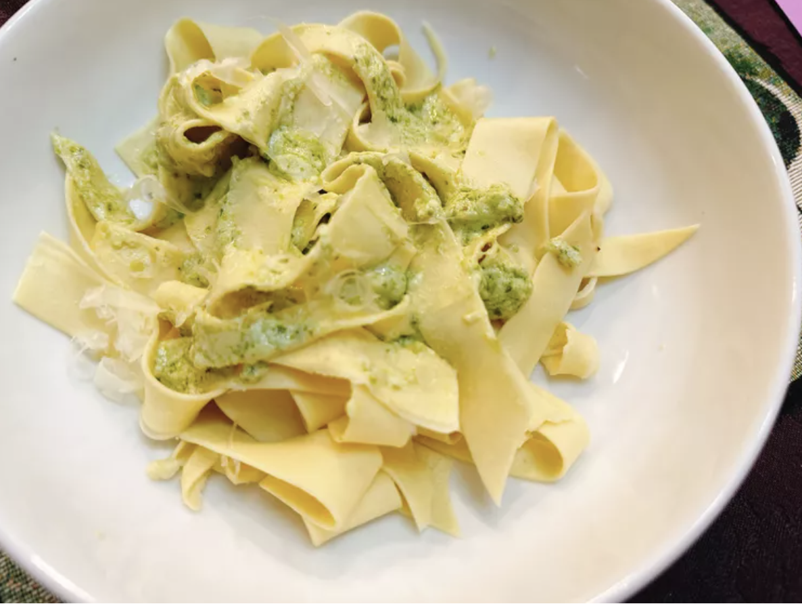

Homemade Pappardelle

Description
With a few kitchen accessories you can make homemade
pappardelle, a broad pasta noodle which welcomes a variety of
different sauces. I chose to make a pesto cream sauce.
Ingredients
- 3/4 cup 00 flour, plus more for dusting
- 1/4 cup semolina flour
- 2 large eggs
Steps:
- Combine 00 flour, semolina flour, and eggs in the bowl of a food
processor. Pulse until dough comes together.
- On a lightly floured cutting board, knead dough about 10 times
with the palm of your hand. Cover dough with a damp towel, and
rest for about 10 minutes. Shape dough into a disc. Wrap dough
and refrigerate for at least 30 minutes.
- Place dough on a lightly floured surface and dust with flour.
Using a rolling pin, and starting in the middle of the dough,
push away from you. Roll dough into a sheet, then tri-fold it
like a letter: pick up one end of dough, fold it over 1/3 of the
way, then bring the opposite end over 1/3 of the way. Continue
rolling out dough until it is thin. Let rest 5 minutes.
- Loosely roll dough like a cinnamon roll. Using a sharp knife,
cut into 3/4-inch-wide slices. Unwrap noodles; dust with
semolina, and gently toss to separate.
- Bring a large pot of salted water to a boil, and cook noodles,
until tender with a bite, 1 to 3 minutes.
Back to main page